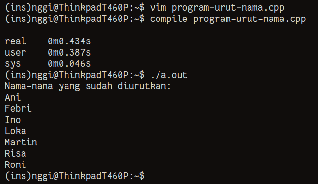

+------------------------------------------------------------------------------+ | | | /home/sukalaper blog/ paper/ about/ | | | +------------------------------------------------------------------------------+ Cara Mengurutkan Nama Dengan Bantuan C++ ________________________________________________________________________________ Cara ini saya lakukan ketika hendak membuat sebuah grup WhatsApp untuk teman- teman angkatan, namun pada sebuah platfrom urutan nama tersebut tersedia secara acak. Jadi, bagaimana membuat sebuah bahasa pemrograman C++ untuk mengurutkan sebuah nama berdasarkan abjad? Saya melakukan sebuah pendekatan yang paling sederhana, dengan array [1] dan fungsi dari pustaka standar C++ seperti std::sort dari pustaka. #include #include #include int main() { std::string names[] = {"Roni", "Martin", "Risa", "Loka", "Ino", "Ani", "Febri"}; // Ini adalah nama samaran int size = sizeof(names) / sizeof(names[0]); std::sort(names, names + size); std::cout << "Nama-nama yang sudah diurutkan:" << std::endl; for (int i = 0; i < size; ++i) { std::cout << names[i] << std::endl; } return 0; } 
Apa tujuan kode ini di buat? Sederhana nya, untuk mengingat kembali nama-nama tersebut apakah sudah ada di grup WhatsApp jika ada maka saya tidak perlu menambahkan kembali dan sebalik nya. ________________________________________________________________________________ Sukalaper © 2024, All rights reserved.